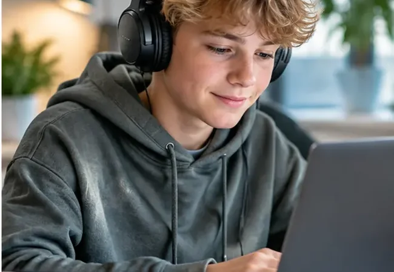

Læsevanskeligheder er ikke én samlet forklaring. En elev kan have vanskeligheder med ordafkodning, sprogforståelse eller begge dele.

Læsevanskeligheder er ikke én samlet forklaring. En elev kan have vanskeligheder med ordafkodning, sprogforståelse eller begge dele.
01 · Hvad ved vi?
Forskningen
Ordblindhed er kendetegnet ved vedvarende vanskeligheder med at udnytte bogstavernes lydprincip i læsning og stavning. Det er ikke det samme som lav intelligens, dovenskab eller manglende vilje. Andre vanskeligheder: eksempelvis udviklingsmæssige sprogforstyrrelser (DLD), opmærksomhedsvanskeligheder og begrænset erfaring med dansk: kan påvirke læsningen og kan optræde samtidigt.
Fra guide til arbejde
Et skema til at beskrive forskellige læseprofiler
Brug observationsskemaet til at adskille sikre iagttagelser om afkodning, forståelse og stavning fra mulige forklaringer.
Beskriv det, eleven faktisk gør: gætter på ord, bruger lang tid, mister ordets lydlige struktur eller har vanskeligt ved at genfortælle. Indsaml elevtekster og lytte-/læseobservationer, og drøft dem med skolens læsevejleder. Undgå at reducere eleven til én kategori.
03 · Hvad gør vi?
En opgave til studie eller praktik
Lad eleven forsøge at læse en kort, alderspassende tekst. Notér præcist, hvad der er svært. Spørg derefter, hvad eleven selv oplever. Aftal én observation og ét muligt støttetiltag med teamet.
Casebaseret læring
Når samme vanskelighed har forskellige årsager
To elever læser langsomt. Den ene har især problemer med at omsætte bogstaver til lyde. Den anden læser ordene nogenlunde, men kender ikke centrale fagbegreber. De har brug for forskelligt undervisningsfokus.
Din refleksion
Hvordan vil du sikre, at en langsomt læsende elev ikke automatisk bliver forstået som ordblind?
Dine svar bliver på din enhed, indtil du selv vælger at gemme eller kopiere dem.
Læs videre i de angivne fagkilder og kontrollér, hvordan de passer til din undervisningskontekst. Cases og undervisningseksempler er udarbejdet til Læseblik. Sidst gennemgået: 31. oktober 2026.
Arbejder du videre med emnet?
Beskriv en tænkt elevprofil med mindst to mulige forklaringer og en plan for at indsamle mere viden.